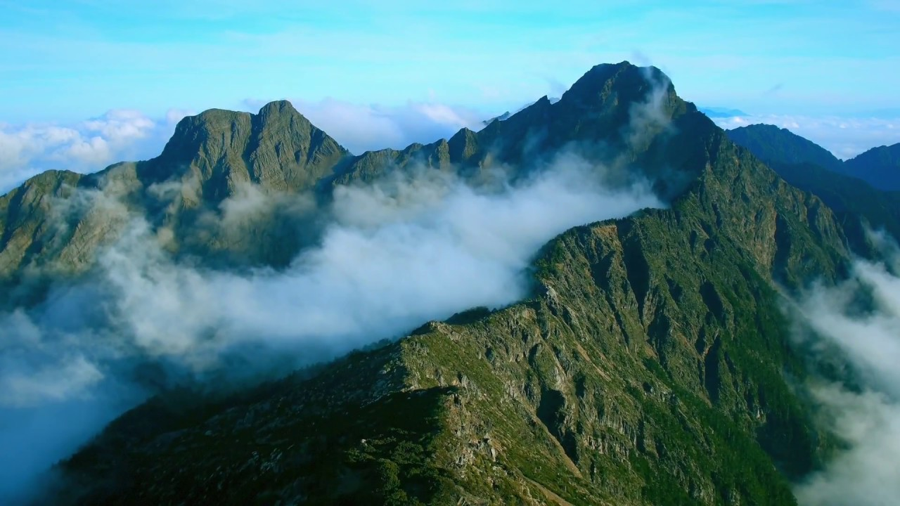

玉山國家公園是中華民國第二座國家公園，前身為日治時期成立之新高阿里山國立公園（1937–1945）。1985年4月6日公告計畫，1985年4月10日成立管理處，總面積103,121.4公頃，涵蓋台灣本島行政區域包括南投縣、嘉義縣、高雄市以及花蓮縣，為台灣陸域面積最大之國家公園。園區位居台灣本島中央地帶，地理位置獨特，奇峰兀立，雄偉壯麗，為台灣高山少數仍保存原始風貌之地區。其間包括有台灣第一高峰，海拔3952公尺之玉山主峰，主峰鄰近地區崇山峻嶺，溪谷深邃，天然植被隨海拔之變化而異，由亞熱帶、溫帶以至寒帶林相次變化， 野生動物遍布，並具有清朝所建歷史遺跡八通關古道；因此，全區蘊藏許多珍貴之生態資源及人文史蹟。